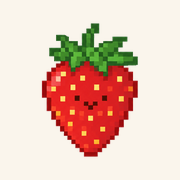
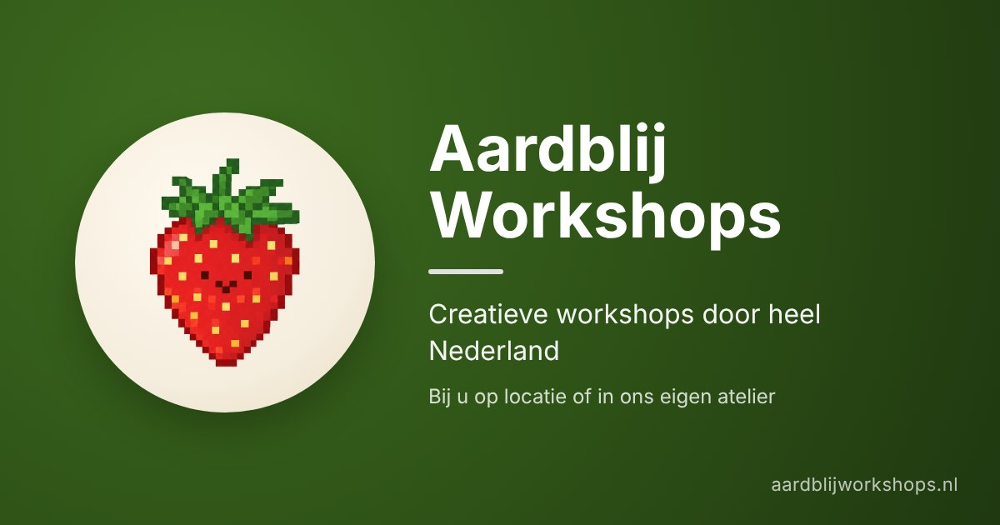

Waar Aardblij voor staat
Aardblij Workshops organiseert creatieve workshops voor groepen. Elke tekst en elke pagina vertelt in de kern hetzelfde verhaal.
- Voor groepen en gelegenhedenTeamuitjes, verjaardagen, feesten en vriendenweekenden.
- Door heel NederlandWij verzorgen workshops zowel bij u op locatie als in ons eigen atelier.
- De juiste kunstenaarWij koppelen ervaren kunstenaars die passen bij uw groep en uw wensen.
- Geen ervaring nodigWorkshops voor alle niveaus. Alle materialen zijn inbegrepen.
- Plezier staat vooropSamen een dag vol plezier beleven en met een eigen creatie naar huis gaan.
- Veel stijlenSchilderen, kaarsen maken, mozaïeken, sieraden en nog veel meer.
Woordmerk met aardbei
Het logo is de naam zelf, vet gezet in de huisletter, met links ervan de pixelaardbei als beeldmerk.
 Aardblij Workshops
Op wit · zwart · gewicht 700
Aardblij Workshops
Op bosgroen · wit · gewicht 700
Aardblij Workshops
Op wit · zwart · gewicht 700
Aardblij Workshops
Op bosgroen · wit · gewicht 700

Icoon · tabblad en beginscherm
Deelafbeelding · 1200 × 630- Schrijf de naam altijd als Aardblij: één woord, alleen de A als hoofdletter. Dus niet AardBlij of Aard Blij.
- In de navigatie en de voettekst staat de volledige naam Aardblij Workshops. In lopende tekst mag ook kort Aardblij.
- De oude naam Creatieve Workshops wordt nergens meer gebruikt.
- In de navigatie brengt een klik op de aardbei u naar de homepage; een klik op de naam brengt u terug naar bovenaan de pagina. De naam kleurt bosgroen bij aanwijzen, de aardbei wordt iets groter.
- De aardbei staat links van de naam: 56 px groot (48 px op iPad en telefoon, 42 px op een kleine telefoon), met een kleine tussenruimte. De naam blijft altijd op één regel. Gebruik altijd het bestand zonder achtergrond,
images/aardbei.png, zodat er geen wit vlak achter de aardbei te zien is. - De aardbei is ook het icoontje in het browsertabblad (
favicon.ico). Op het beginscherm van een iPhone staat hij op een roomkleurig vlak (apple-touch-icon.png). - Wordt een pagina gedeeld via WhatsApp, Facebook of LinkedIn, dan verschijnt de deelafbeelding (
images/deelafbeelding.jpg): de aardbei in een roomkleurige cirkel op bosgroen, met de naam en de kernzin Creatieve workshops door heel Nederland.
Bosgroen op wit
Het palet is rustig: veel wit, zwarte tekst en één groen dat alles draagt wat aangeklikt kan worden. Klik op een kleurcode om hem te kopiëren.
Hoofdkleur. Knoppen, voettekst, accenten, kaders, plaatshouders voor beeld en de achtergrond van de deelafbeelding.
Wit hierop: 9,3 : 1Alleen voor de aanwijsstand (hover) van groene knoppen.
Wit hierop: 12,9 : 1Achtergrond van alle pagina's en tekst op groen.
Koppen, logo, navigatie en de belangrijkste lopende tekst.
Op wit: 21 : 1Aanvullende tekst op workshoppagina's, zoals uitleg in kaders en kaarten.
Op wit: 7,5 : 1Randen van kaarten en de navigatie, en de links in de groene voettekst.
Op bosgroen: 7,0 : 1Zachte vlakken, zoals de achtergrond achter grote foto's. Voor kaarten en kaders: #fafafa en #f9f9f9.
Alleen voor plaatshouders van beeld: het beeldvlak bovenaan de workshoppagina's en de cirkel in de deelafbeelding. Loopt zacht over van #fffaf0 naar #e9dcc3.
Alleen voor plaatshouders van beeld. Een knipoog naar de aardbei. Nu niet in gebruik, sinds de homepage echte foto's heeft. Loopt zacht over van #fff3f1 naar #f3c9c3.
Gebruik geen andere kleuren voor knoppen of koppen. Groen betekent: hier kunt u iets doen. Room en zacht roze zijn alleen voor vlakken waar later een foto komt.
De systeemletter
De website gebruikt de standaardletter van het apparaat van de bezoeker (San Francisco op Apple, Segoe UI op Windows, Roboto op Android). Die laadt direct en leest prettig op elk scherm.
font-family: -apple-system, BlinkMacSystemFont, 'Segoe UI', 'Roboto', 'Oxygen', 'Ubuntu', 'Cantarell', sans-serif;
Vier gewichten, elk met een vaste taak: 700 voor titels en logo, 600 voor kaarttitels, 500 voor navigatie en knoppen, 400 voor lopende tekst.
Bouwstenen van de pagina's
Deze onderdelen komen op elke pagina terug. Gebruik ze zoals ze zijn, zodat bezoekers ze overal herkennen.
Knop
Bosgroen met witte tekst, hoeken van 4 px, donkerder groen bij aanwijzen. De grote versie (16 px) staat onder een rij workshops. Op telefoon is de knop in het menu even breed als het scherm.
Workshopkaart
Witte kaart met een lichtgrijze rand, hoeken van 8 px en een zachte schaduw. Bij aanwijzen komt de kaart 2 px omhoog. Bovenaan een beeldvlak van 220 px hoog.
Uitlichtkader
Praktische Informatie
Alle materialen zijn inbegrepen. U hoeft alleen uw creativiteit mee te brengen!
Voor praktische informatie en tips op workshoppagina's. Een groene streep van 4 px links, titel in bosgroen. Het kader Praktische Informatie begint met een korte opsomming (duur, begeleiding, materialen, niveau, foto's) met bosgroene opsommingstekens, en daaronder een zin over boeken en contact.
Kenmerkkaart
Mee Naar Huis
U gaat naar huis met uw eigen handgemaakte creatie.
Korte voordelen van een workshop, in een raster van twee kaarten naast elkaar (op telefoon onder elkaar).
Gastvrij, beleefd en vol plezier
Aardblij spreekt bezoekers altijd aan met u. De toon is warm en uitnodigend, nooit stijf. Schrijf zoals een gastvrouw die u ontvangt in het atelier.
Maak uw eigen geurende cocktailkaarsen.
Maak je eigen geurende cocktailkaarsen.
Ontdek Aardblij door heel Nederland!
Ontdek onze workshops in heel Nederland.
Wij verzorgen onze workshops zowel bij u op locatie als in ons eigen atelier.
We komen ook naar jou toe!
Wij bieden workshops voor alle niveaus, u hoeft geen ervaring te hebben.
Of je nu net je creatieve reis begint of je vaardigheden wilt verbeteren.
Een workshop voor 1 tot 10 deelnemers kost € 450 incl. btw.
Een workshop voor 1 tot 10 deelnemers kost € 450 excl. btw.
Woordenlijst
| Gebruik | Niet gebruiken | Toelichting |
|---|---|---|
| u, uw | je, jij, jouw | Overal, ook in knoppen, kaarten en korte omschrijvingen. |
| jullie (alleen vanuit de klant) | jullie (tegen de klant) | Waar de klant zelf aan het woord is, zoals in een FAQ-vraag, mag de klant ons met jullie aanspreken: Waar in Nederland geven jullie workshops? Wij spreken de klant altijd aan met u. |
| door heel Nederland | in heel Nederland | Wij reizen het hele land door. |
| op locatie en in ons eigen atelier | alleen bij ons | Altijd allebei noemen waar het over de plek gaat. |
| workshop | les, klas | Wij geven workshops, geen lessen. |
| teamuitje, feestje, vriendenweekend | bedrijfsevenement | De gelegenheden waar onze bezoekers zelf aan denken. |
| Aardblij Workshops, Aardblij | Creatieve Workshops | De oude naam is vervangen. |
| € 450 incl. btw | excl. btw, exclusief btw | Alle prijzen zijn inclusief btw. Schrijf het euroteken met een spatie ervoor, en incl. btw in kleine letters. |
Knopteksten
Begin met een werkwoord en houd het kort. Schrijf Meer informatie voluit, niet Meer info.
Ruim op desktop, compact op telefoon
Elke pagina werkt op desktop, iPad en telefoon. De witruimte en het aantal kaarten per rij schalen mee met het scherm.
| Scherm | Breedte | Ruimte per sectie | Kaarten per rij | Menu |
|---|---|---|---|---|
| Desktop | vanaf 1025 px | 80 px boven/onder, 60 px zijkant | 3 | Volledig |
| iPad liggend | 769–1024 px | 70 px / 40 px | 3 (workshoppagina: 2) | Volledig |
| Telefoon, iPad staand | 481–768 px | 40 px / 20 px | 1 | Hamburgermenu |
| Kleine telefoon | tot 480 px | 30 px / 15 px | 1 | Hamburgermenu |
- Hoeken: knoppen en kaders 4 px, kaarten 8 px (6 px op telefoon), lijstjes 6 px.
- Schaduw alleen op workshopkaarten, prijskaarten en het offerteformulier:
0 1px 3px rgba(0,0,0,.08). Workshop- en prijskaarten krijgen bij aanwijzen0 4px 12px rgba(0,0,0,.12)en komen 2 px omhoog; het offerteformulier beweegt niet. - De navigatiebalk blijft bovenaan staan tijdens het scrollen en heeft een dunne lijngrijze rand eronder. Op desktop staat het logo links, het menu precies in het midden en de knop Reserveer helemaal rechts.
Foto's van mensen die samen maken
De homepage heeft echte foto's: drie dia's in de wisselende foto bovenaan (die wisselt elke 2 seconden, begint én eindigt op de groepsfoto met Creatieve workshops door heel Nederland, na twee rondes) en een foto naast Over Aardblij Workshops. Elders staan nog plaatshouders: bosgroene vlakken met een icoon per workshop en roomkleurige vlakken met een icoon bovenaan de workshoppagina's.
- De drie dia's bovenaan de homepage zijn foto's van rand tot rand, elk met een korte kop in wit (44 px, 700) en een zin eronder. Een zachte donkere overgang achter de tekst houdt die leesbaar. Staan de mensen op een foto juist onderaan, dan komt de tekst bovenaan (zoals bij de groepsfoto). De bolletjes eronder zijn wit; het bolletje van de getoonde dia is bosgroen met een witte rand, zodat het op lichte én donkere dia's opvalt.
- Vervang de plaatshouders door echte foto's van workshops: deelnemers aan het werk, handen met verf of wax, en de creaties die ze mee naar huis nemen.
- Laat plezier zien: lachende groepen, een gezellige tafel, een hapje en een drankje.
- Toon beide plekken: het eigen atelier én workshops op locatie, zoals een kantoor of een alpacaweide.
- Gebruik liefst daglicht en natuurlijke kleuren, die passen bij het bosgroen.
- Iconen zijn pixelart, geen emoji's. Net als de aardbei in het logo zijn alle kleine iconen (bij kenmerkkaarten, lijstjes, kaders en in lege fotovlakken) pixelart van 12 × 12 pixels, in de kleuren van de huisstijl. Ze staan als bestand in
images/iconen/. - Een nieuw icoon tekent u in
tools/pixel-iconen.txt: één letter per pixel, een punt is doorzichtig. Daarna maaktpython3 tools/pixelicoon.pyde bestanden aan (met--vervangworden emoji's in de pagina's meteen vervangen). Alle iconen staan op een rij intools/pixel-iconen-overzicht.html. - Gebruik op een bosgroen vlak geen iconen die zelf donkergroen zijn; die vallen weg.
- Een foto in een dia zetten: vervang de inhoud van de dia door een
<img>en haal de klassenplaatshouderweg. De uitleg staat ook als notitie inindex.html. - Een foto in een ander fotovlak zetten (workshopkaart, het vlak bovenaan een workshoppagina of naast Over Aardblij Workshops): vervang het icoon in dat vlak door een
<img src="images/..." alt="...">. De foto vult dan vanzelf het hele vlak, zonder te vervormen, ook als de bezoeker inzoomt. - Heeft een workshop een foto bovenaan zijn eigen pagina, dan krijgen de kaarten van die workshop (homepage en workshoppagina) dezelfde foto, in een lichtere versie:
images/naam-kaart.jpg, 800 px breed. - Een extra foto in de tekst van een workshoppagina staat gecentreerd, maximaal 520 px breed, met hoeken van 8 px (
<figure class="inhoud-foto">). Zet hem bij de tekst waar hij over gaat, zoals de foto van het aansteken bij de tips over branden. - Een productfoto zonder achtergrond (vrijstaand, als PNG) staat in zijn geheel op het roomkleurige vlak, zonder bijsnijden: geef het fotovlak de klasse
vrijstaand. Zo blijft ook een kleine foto scherp. - Drie foto's naast elkaar, bijvoorbeeld van materialen, staan in een
fotorij(een foto mag een kort onderschrift krijgen: cursief, tekstgrijs. Alleen als de klant daarom vraagt of als het onderschrift echt iets toevoegt; de meeste foto's hebben er geen nodig): vierkant, met hoeken van 8 px. Voor twee foto's naast elkaar:fotorij twee. - Zet het belangrijkste altijd in het midden van de foto. Op smalle of lage schermen wordt een foto aan de randen bijgesneden; het midden blijft altijd zichtbaar.
- Beschrijf in de
alt-tekst kort wat er op de foto te zien is, bijvoorbeeld Deelnemers schilderen tussen de alpaca's. Dat helpt bezoekers met een schermlezer en Google.
| Plek | Vorm | Handige maat |
|---|---|---|
| Wisselende foto homepage | Liggend, breed | 2400 × 1200 px |
| Fotovlak bovenaan een workshoppagina | Liggend of vierkant | 1600 × 1200 px |
| Workshopkaart | Liggend | 1200 × 750 px |
| Naast Over Aardblij Workshops | Vierkant of staand | 1200 × 1200 px |
- Sla foto's op als JPG van liefst minder dan 300 KB per stuk, zodat de site ook op een telefoon snel laadt.